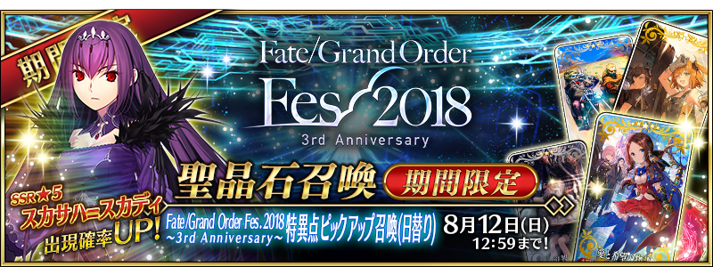
◆「Fate/Grand Order Fes. 2018 ～3rd Anniversary～特異點Pick Up召喚(每日交替)」◆
期間:2018年7月29日(日) 15:30～8月12日(日) 11:59
期間限定「Fate/Grand Order Fes. 2018 ～3rd Anniversary～特異點Pick Up召喚(每日交替)」、「特異點Pick Up1召喚(每日交替)」與「特異點Pick Up2召喚(每日交替)」分成2種舉辦！
本次Servant「★5(SSR)斯卡哈＝斯卡蒂」與概念禮裝「★5(SSR)愛と希望の物語」「★4(SR)グレイテスト・ジャーニー」「★3(R)TEAM Phoenix」以期間限定登場！
另外，在「Fate/Grand Order Fes. 2017 ～2nd Anniversary～」登場的「★5(SSR)夏洛克・福爾摩斯」與期間限定概念禮裝「★5(SSR)カルデア・アニバーサリー」「★4(SR)アフタヌーン・パーティー」「★3(R)スターライト・フェスト」8月7日(二) 23:00～8月9日(四) 22:59以期間限定在「特異點Pick Up1召喚(每日交替)」再登場！
| 「特異點Pick Up1召喚(每日交替)」舉辦期間 |
|---|
| 「特異點Pick Up2召喚(每日交替)」舉辦期間 |
|---|
※請注意「特異點Pick Up1召喚(每日交替)」與「特異點Pick Up2召喚(每日交替)」舉辦期間有所差異。
10次召喚中確定1張★4(SR)以上和確定1位★3(R)以上的Servant！
※確定★4(SR)以上包含Servant和概念禮裝。
◆Servant、概念禮裝相關的注意◆
※斯卡哈＝斯卡蒂、夏洛克・福爾摩斯在Pick Up期間結束後不會追加到故事召喚。
※請注意8月7日(二) 23:00～8月9日(四) 22:59之間，「★5(SSR)愛と希望の物語」「★4(SR)グレイテスト・ジャーニー」「★3(R)TEAM Phoenix」不會被抽出。
※請注意「★4(SR)瓦爾基里」不會被抽出。
※藉由章節進行追加的一部份的Servant，就算通過各章前也能入手。
※以每日交替Pick Up的特異點等的Servant在Pick Up期間結束後也會在故事召喚會被抽出。
※「★3(R)TEAM Phoenix」2018年7月29日(日) 15:30～8月12日(日) 11:59之間，也能在友情點數召喚獲得。
※「★3(R)スターライト・フェスト」2018年8月7日(二) 23:00～8月9日(四) 22:59之間，也能在友情點數召喚獲得。
※請注意自友情點數召喚抽出「★3(R)TEAM Phoenix」「★3(R)スターライト・フェスト」在自動變還設定登錄★3(R)概念禮裝的情況，會變成自動變還的對象。
◆「特異點Pick Up召喚」每日交替Pick Up內容◆
本次的Pick Up中從特異點F到第七特異點代表的Servant們以每日交替，「★5(SSR)斯卡哈＝斯卡蒂」常駐Pick Up！
Pick Up期間中，期間限定Servant、Pick UpServant、期間限定概念禮裝的出現機率提升！
詳情請在聖晶石召喚畫面左下的召喚詳細確認。
| 每日交替Pick Up期間 | 每日交替Pick Up1內容 | 每日交替Pick Up2內容 |
|---|---|---|
| 7月29日(日) 15:30～ 7月31日(二) 22:59 |
・斯卡哈＝斯卡蒂 | 舉辦期間外 |
| 7月31日(二) 23:00～8月1日(三) 22:59 |
【特異點F 炎上汙染都市 冬木】 ・斯卡哈＝斯卡蒂 ・阿爾托莉亞・潘德拉剛(Saber) |
【第一特異點 邪龍百年戰爭 奧爾良】 ・斯卡哈＝斯卡蒂 ・貞德(Ruler) |
| 8月1日(三) 23:00～8月2日(四) 22:59 |
【第二特異點 永續狂氣帝國 羅馬七省】 ・斯卡哈＝斯卡蒂 ・阿提拉(Saber) |
【第三特異點 封鎖終局四海 俄刻阿諾斯】 ・斯卡哈＝斯卡蒂 ・弗朗西斯・德雷克 |
| 8月2日(四) 23:00～8月3日(五) 22:59 |
【第四特異點 死界魔霧都市 倫敦】 ・斯卡哈＝斯卡蒂 ・莫德雷德(Saber) |
【第四特異點 死界魔霧都市 倫敦】 ・斯卡哈＝斯卡蒂 ・尼古拉・特斯拉 |
| 8月3日(五) 23:00～8月4日(六) 22:59 |
【第五特異點 北美神話大戰 合眾為一】 ・斯卡哈＝斯卡蒂 ・女王梅芙 |
【第五特異點 北美神話大戰 合眾為一】 ・斯卡哈＝斯卡蒂 ・庫・夫林〔Alter〕 |
| 8月4日(六) 23:00～8月5日(日) 22:59 |
【第五特異點 北美神話大戰 合眾為一】 ・斯卡哈＝斯卡蒂 ・南丁格爾 |
【第六特異點 神聖圓桌領域 卡美洛】 ・斯卡哈＝斯卡蒂 ・阿爾托莉亞・潘德拉剛(Lancer) |
| 8月5日(日) 23:00～8月6日(一) 22:59 |
【第六特異點 神聖圓桌領域 卡美洛】 ・斯卡哈＝斯卡蒂 ・奧茲曼迪亞斯 |
【第七特異點 絕對魔獸戰線 巴比倫尼亞】 ・斯卡哈＝斯卡蒂 ・恩奇杜 |
| 8月6日(一) 23:00～8月7日(二) 22:59 |
【第七特異點 絕對魔獸戰線 巴比倫尼亞】 ・斯卡哈＝斯卡蒂 ・魁札爾・科亞特爾 |
舉辦期間外 |
| 8月7日(二) 23:00～ 8月9日(四) 22:59 |
・斯卡哈＝斯卡蒂 ・夏洛克・福爾摩斯 |
|
| 8月9日(四) 23:00～ 8月12日(日) 11:59 |
・斯卡哈＝斯卡蒂 |
※請注意會以每日交替變更Pick Up的Servant。
※Pick Up期間中，藉由章節進行追加的一部份Servant就算通過該章前也能入手。
7月31日(二) 23:00～8月1日(三) 22:59
| 特異點Pick Up1召喚(每日交替) |
|---|
| 職階 | 稀有度 | Servant名 |
|---|---|---|
| Saber | ★★★★★ | 阿爾托莉亞・潘德拉剛 |
| Caster | ★★★★★ | 斯卡哈＝斯卡蒂 |
| Saber | ★★★★ | 阿爾托莉亞・潘德拉剛〔Alter〕 |
| Archer | ★★★★ | Emiya |
| Berserker | ★★★★ | 海克力斯 |
| Lancer | ★★★ | 庫・夫林 |
| Rider | ★★★ | 美杜莎 |
| Caster | ★★★ | 庫・夫林 |
| ★★★ | 美狄亞 |
※未通過特異點F的狀態也能進行Pick Up召喚。
※Pick Up期間中，阿爾托莉亞・潘德拉剛〔Alter〕(Saber)、庫・夫林(Caster)就算通過該章前也能入手。
| 特異點Pick Up2召喚(每日交替) |
|---|

| 職階 | 稀有度 | Servant名 |
|---|---|---|
| Caster | ★★★★★ | 斯卡哈＝斯卡蒂 |
| Ruler | ★★★★★ | 貞德 |
| Saber | ★★★★ | 齊格飛 |
| ★★★★ | 夏爾・德翁 | |
| ★★★ | 吉爾・德・雷 | |
| Caster | ★★★ | 吉爾・德・雷 |
| Berserker | ★★★ | 清姬 |
※第一特異點的狀態也能進行Pick Up召喚。
※Pick Up期間中，吉爾・德・雷(Caster)就算通過該章前也能入手。
8月1日(三) 23:00～8月2日(四) 22:59
| 特異點Pick Up1召喚(每日交替) |
|---|

| 職階 | 稀有度 | Servant名 |
|---|---|---|
| Saber | ★★★★★ | 阿提拉 |
| Caster | ★★★★★ | 斯卡哈＝斯卡蒂 |
| Saber | ★★★★ | 尼祿・克勞狄烏斯 |
| ★★★ | 蓋烏斯・尤利烏斯・凱撒 | |
| Lancer | ★★★ | 羅慕路斯 |
| Rider | ★★★ | 布狄卡 |
※第二特異點的狀態也能進行Pick Up召喚。
※Pick Up期間中，尼祿・克勞狄烏斯(Saber)就算通過該章前也能入手。
| 特異點Pick Up2召喚(每日交替) |
|---|

| 職階 | 稀有度 | Servant名 |
|---|---|---|
| Rider | ★★★★★ | 弗朗西斯・德雷克 |
| Caster | ★★★★★ | 斯卡哈＝斯卡蒂 |
| Rider | ★★★★ | 安妮・伯妮＆瑪莉・瑞德 |
| Caster | ★★★★ | 美狄亞〔Lily〕 |
| Archer | ★★★ | 尤瑞艾莉 |
| ★★★ | 大衛 | |
| Lancer | ★★★ | 赫克特 |
※第三特異點通過未通過的狀態也能進行Pick Up召喚。
※Pick Up期間中，美狄亞〔Lily〕就算通過該章前也能入手。
8月2日(四) 23:00～8月3日(五) 22:59
| 特異點Pick Up1召喚(每日交替) |
|---|
| 職階 | 稀有度 | Servant名 |
|---|---|---|
| Saber | ★★★★★ | 莫德雷德 |
| Caster | ★★★★★ | 斯卡哈＝斯卡蒂 |
| Lancer | ★★★★ | 阿爾托莉亞・潘德拉剛〔Alter〕 |
| Caster | ★★★★ | 童謠 |
| Berserker | ★★★★ | 弗蘭肯斯坦 |
| Caster | ★★★ | 馮・霍恩海姆・帕拉塞爾斯 |
| ★★★ | 查爾斯・巴貝奇 | |
| Assassin | ★★★ | 亨利・傑基爾＆海德 |
※第四特異點通過未通過的狀態也能進行Pick Up召喚。
※Pick Up期間中，阿爾托莉亞・潘德拉剛〔Alter〕(Lancer)就算通過該章前也能入手。
| 特異點Pick Up2召喚(每日交替) |
|---|
| 職階 | 稀有度 | Servant名 |
|---|---|---|
| Archer | ★★★★★ | 尼古拉・特斯拉 |
| Caster | ★★★★★ | 斯卡哈＝斯卡蒂 |
| Lancer | ★★★★ | 阿爾托莉亞・潘德拉剛〔Alter〕 |
| Caster | ★★★★ | 童謠 |
| Berserker | ★★★★ | 弗蘭肯斯坦 |
| Caster | ★★★ | 馮・霍恩海姆・帕拉塞爾斯 |
| ★★★ | 查爾斯・巴貝奇 | |
| Assassin | ★★★ | 亨利・傑基爾＆海德 |
※第四特異點通過未通過的狀態也能進行Pick Up召喚。
※Pick Up期間中，尼古拉・特斯拉、阿爾托莉亞・潘德拉剛〔Alter〕(Lancer)就算通過該章前也能入手。
8月3日(五) 23:00～8月4日(六) 22:59
| 特異點Pick Up1召喚(每日交替) |
|---|
| 職階 | 稀有度 | Servant名 |
|---|---|---|
| Rider | ★★★★★ | 女王梅芙 |
| Caster | ★★★★★ | 斯卡哈＝斯卡蒂 |
| Saber | ★★★★ | 羅摩 |
| Lancer | ★★★★ | 李書文 |
| Caster | ★★★★ | 海倫娜・布拉瓦茨基 |
| ★★★★ | 湯瑪斯・愛迪生 | |
| Archer | ★★★ | 比利小子 |
| Caster | ★★★ | 傑羅尼莫 |
※第五特異點通過未通過的狀態也能進行Pick Up召喚。
※Pick Up期間中，女王梅芙、李書文、湯瑪斯・愛迪生就算通過該章前也能入手。
| 特異點Pick Up2召喚(每日交替) |
|---|
| 職階 | 稀有度 | Servant名 |
|---|---|---|
| Caster | ★★★★★ | 斯卡哈＝斯卡蒂 |
| Berserker | ★★★★★ | 庫・夫林〔Alter〕 |
| Saber | ★★★★ | 羅摩 |
| Lancer | ★★★★ | 李書文 |
| Caster | ★★★★ | 海倫娜・布拉瓦茨基 |
| ★★★★ | 湯瑪斯・愛迪生 | |
| Archer | ★★★ | 比利小子 |
| Caster | ★★★ | 傑羅尼莫 |
※第五特異點通過未通過的狀態也能進行Pick Up召喚。
※Pick Up期間中，庫・夫林〔Alter〕、李書文、湯瑪斯・愛迪生就算通過該章前也能入手。
8月4日(六) 23:00～8月5日(日) 22:59
| 特異點Pick Up1召喚(每日交替) |
|---|
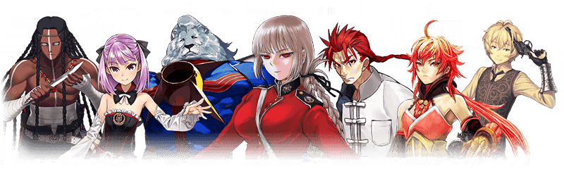
| 職階 | 稀有度 | Servant名 |
|---|---|---|
| Caster | ★★★★★ | 斯卡哈＝斯卡蒂 |
| Berserker | ★★★★★ | 南丁格爾 |
| Saber | ★★★★ | 羅摩 |
| Lancer | ★★★★ | 李書文 |
| Caster | ★★★★ | 海倫娜・布拉瓦茨基 |
| ★★★★ | 湯瑪斯・愛迪生 | |
| Archer | ★★★ | 比利小子 |
| Caster | ★★★ | 傑羅尼莫 |
※第五特異點通過未通過的狀態也能進行Pick Up召喚。
※Pick Up期間中，李書文、湯瑪斯・愛迪生就算通過該章前也能入手。
| 特異點Pick Up2召喚(每日交替) |
|---|
| 職階 | 稀有度 | Servant名 |
|---|---|---|
| Lancer | ★★★★★ | 阿爾托莉亞・潘德拉剛 |
| Caster | ★★★★★ | 斯卡哈＝斯卡蒂 |
| Saber | ★★★★ | 高文 |
| ★★★★ | 蘭斯洛特 | |
| Archer | ★★★★ | 崔斯坦 |
| Caster | ★★★★ | 尼托克里絲 |
| Saber | ★★★ | 貝德維爾 |
| Archer | ★★★ | 俵藤太 |
| Assassin | ★★★ | 靜謐的哈桑 |
※第六特異點通過未通過的狀態也能進行Pick Up召喚。
※Pick Up期間中，阿爾托莉亞・潘德拉剛(Lancer)、高文、崔斯坦、べディヴィエール就算通過該章前也能入手。
8月5日(日) 23:00～8月6日(一) 22:59
| 特異點Pick Up1召喚(每日交替) |
|---|
| 職階 | 稀有度 | Servant名 |
|---|---|---|
| Rider | ★★★★★ | 奧茲曼迪亞斯 |
| Caster | ★★★★★ | 斯卡哈＝斯卡蒂 |
| Saber | ★★★★ | 高文 |
| ★★★★ | 蘭斯洛特 | |
| Archer | ★★★★ | 崔斯坦 |
| Caster | ★★★★ | 尼托克里絲 |
| Saber | ★★★ | 貝德維爾 |
| Archer | ★★★ | 俵藤太 |
| Assassin | ★★★ | 靜謐的哈桑 |
※第六特異點通過未通過的狀態也能進行Pick Up召喚。
※Pick Up期間中，高文、崔斯坦、べディヴィエール就算通過該章前也能入手。
| 特異點Pick Up2召喚(每日交替) |
|---|
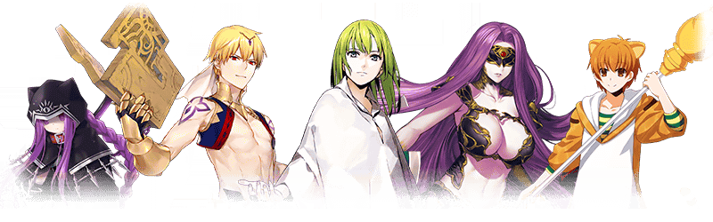
| 職階 | 稀有度 | Servant名 |
|---|---|---|
| Lancer | ★★★★★ | 恩奇杜 |
| Caster | ★★★★★ | 斯卡哈＝斯卡蒂 |
| Lancer | ★★★★ | 美杜莎 |
| Caster | ★★★★ | 吉爾伽美什 |
| Avenger | ★★★★ | 戈爾貢 |
| Lancer | ★★★ | 豹人 |
※第七特異點通過未通過的狀態也能進行Pick Up召喚。
※Pick Up期間中，戈爾貢、豹人就算通過該章前也能入手。
8月6日(一) 23:00～8月7日(二) 22:59
| 特異點Pick Up1召喚(每日交替) |
|---|
| 職階 | 稀有度 | Servant名 |
|---|---|---|
| Rider | ★★★★★ | 魁札爾・科亞特爾 |
| Caster | ★★★★★ | 斯卡哈＝斯卡蒂 |
| Lancer | ★★★★ | 美杜莎 |
| Caster | ★★★★ | 吉爾伽美什 |
| Avenger | ★★★★ | 戈爾貢 |
| Lancer | ★★★ | 豹人 |
※第七特異點通過未通過的狀態也能進行Pick Up召喚。
※Pick Up期間中，魁札爾・科亞特爾、戈爾貢、豹人就算通過該章前也能入手。
8月7日(二) 23:00～8月9日(四) 22:59
| 特異點Pick Up1召喚(每日交替) |
|---|
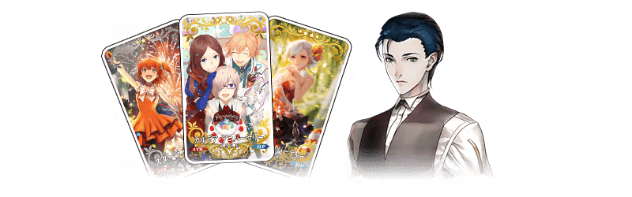
| 職階 | 稀有度 | Servant名 |
|---|---|---|
| Caster | ★★★★★ | 斯卡哈＝斯卡蒂 |
| Ruler | ★★★★★ | 夏洛克・福爾摩斯 |
| 稀有度 | 概念禮裝名 |
|---|---|
| ★★★★★ | カルデア・アニバーサリー |
| ★★★★ | アフタヌーン・パーティー |
| ★★★ | スターライト・フェスト |
※請注意8月7日(二) 23:00～8月9日(四) 22:59之間，「★5(SSR)愛と希望の物語」「★4(SR)グレイテスト・ジャーニー」「★3(R)TEAM Phoenix」不會被抽出。
| 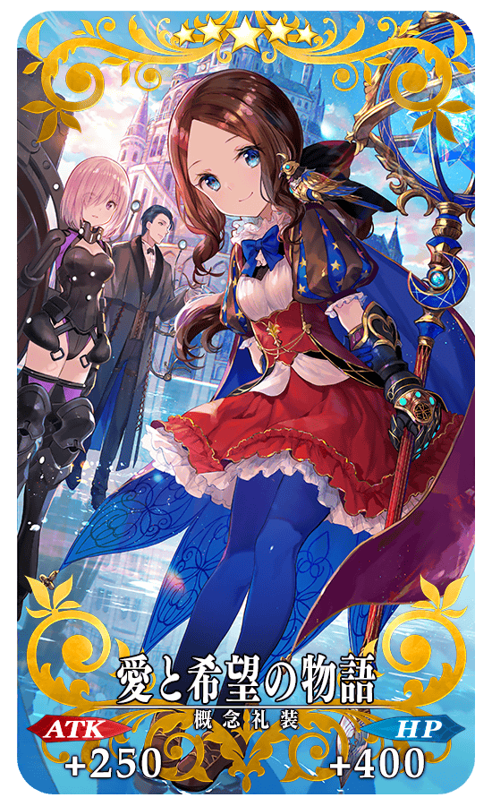 |
★★★★★SSR |
| 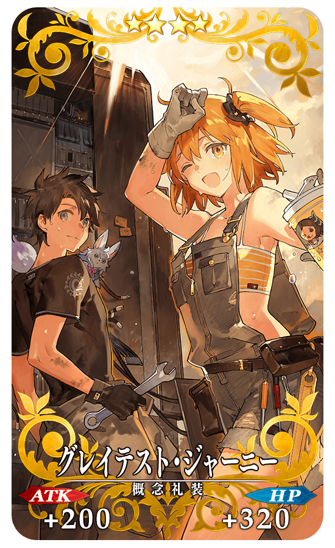 |
★★★★SR |
| 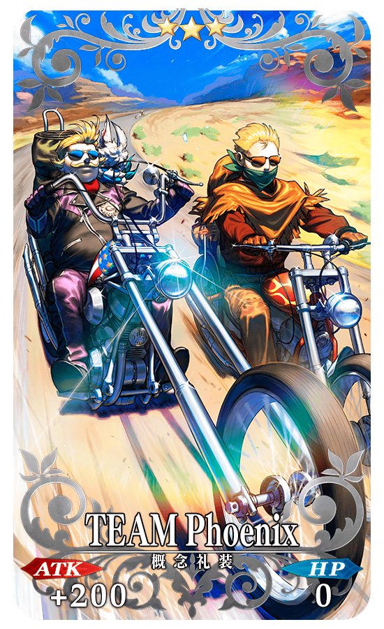 |
★★★R |
以期間限定舉辦斯卡哈＝斯卡蒂的體驗關卡！
迎接「★5(SSR)斯卡哈＝斯卡蒂」做為支援成員，挑戰期間限定的關卡！
別錯過體驗Servant技能與寶具的機會！
※請注意斯卡哈＝斯卡蒂體驗關卡沒有冒險部分。
◆斯卡哈＝斯卡蒂體驗關卡舉辦期間◆
2018年7月29日(日) 15:30～8月12日(日) 11:59
◆開放條件◆
通過「特異點F 炎上汙染都市 冬木」的Master對象
◆關卡通過報酬◆
呼符 1張
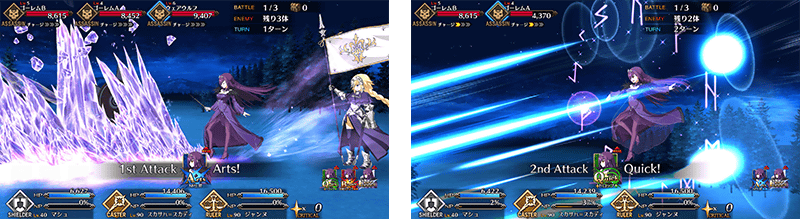
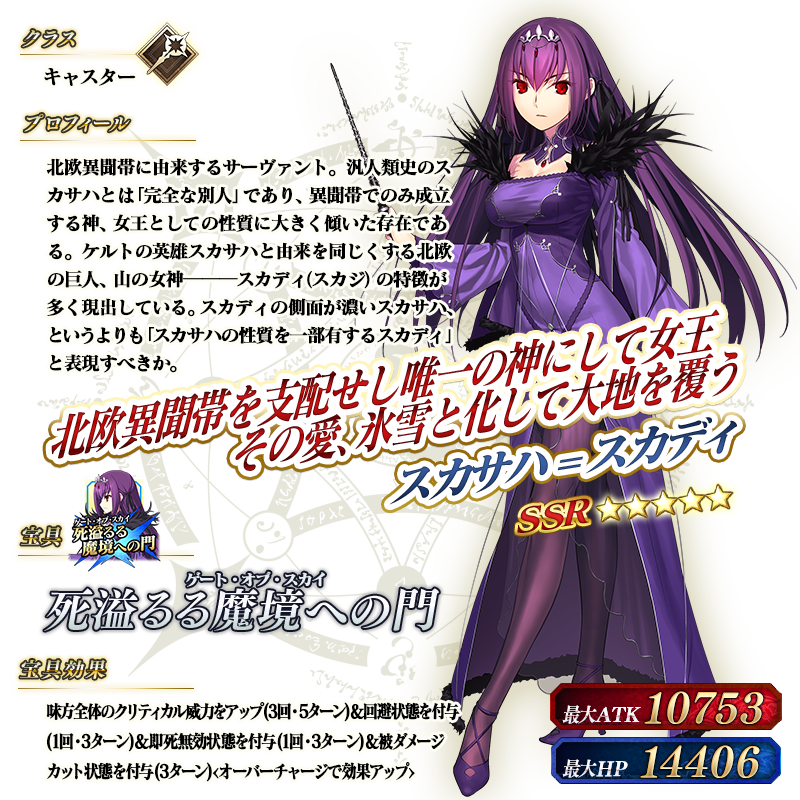
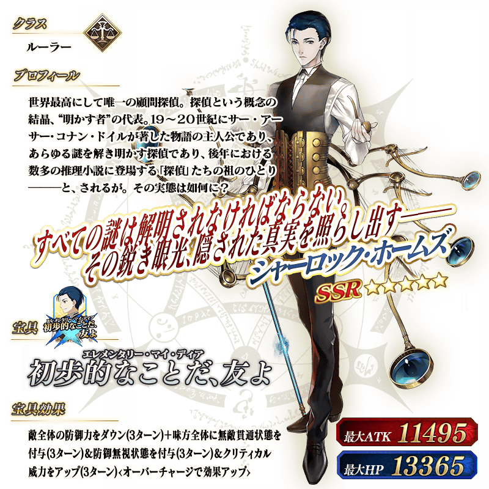
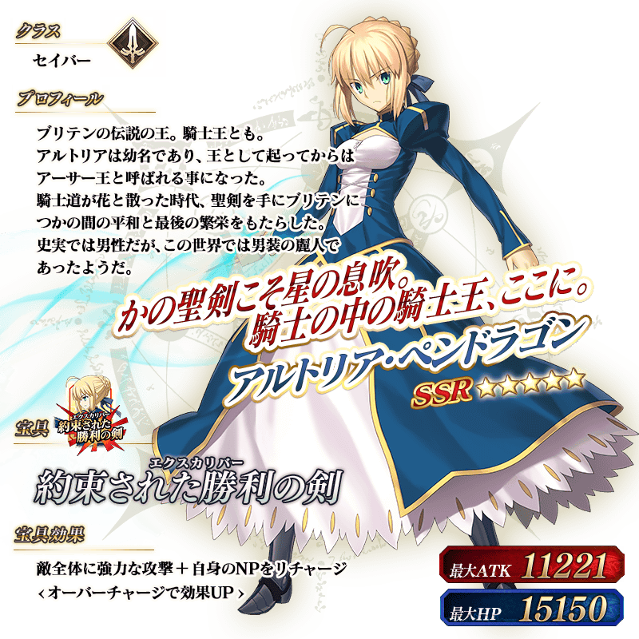
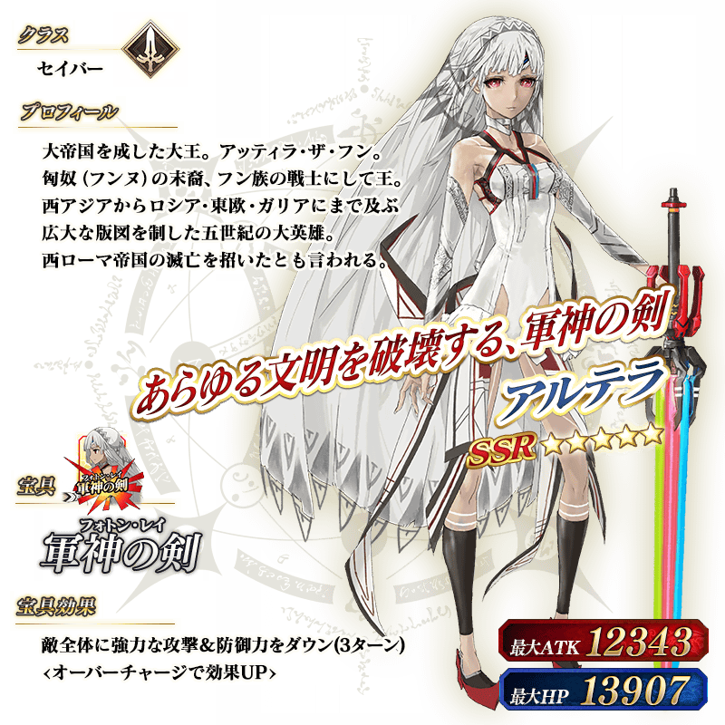
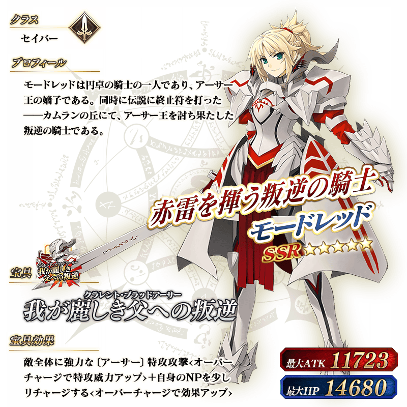
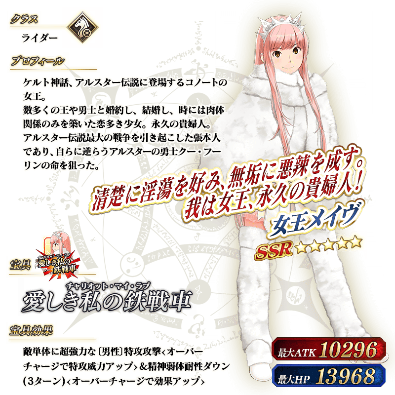
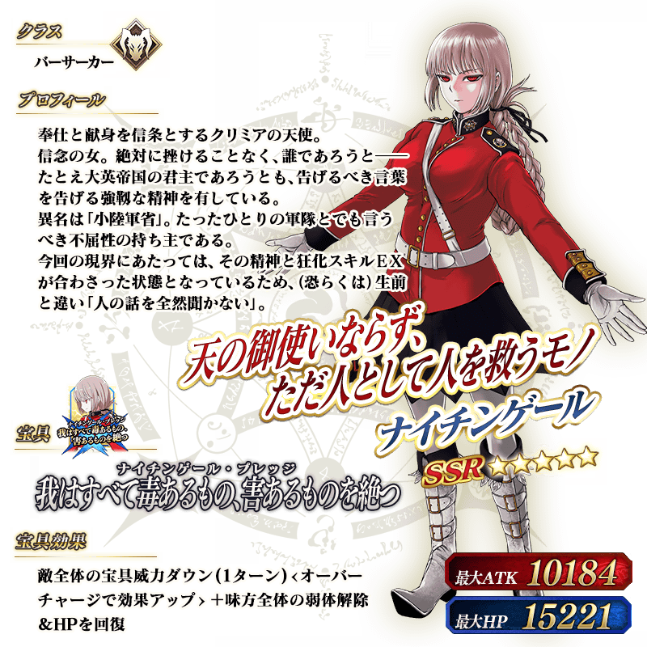
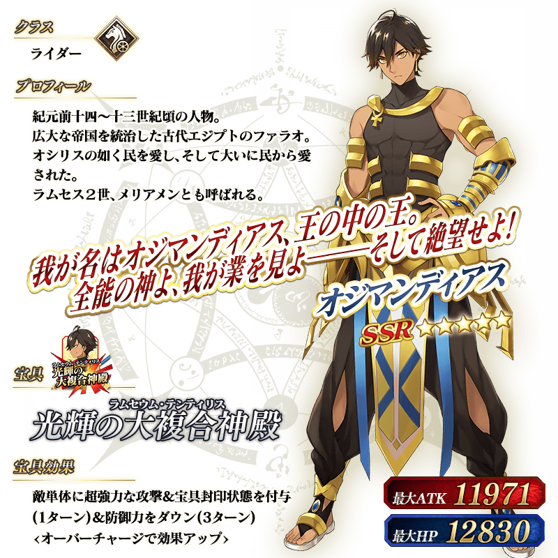

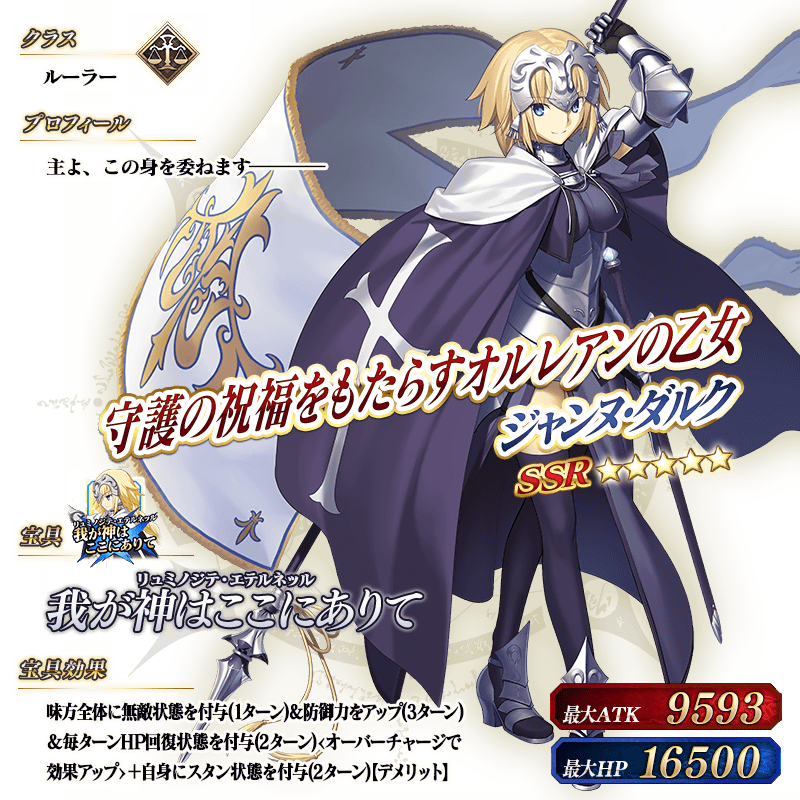
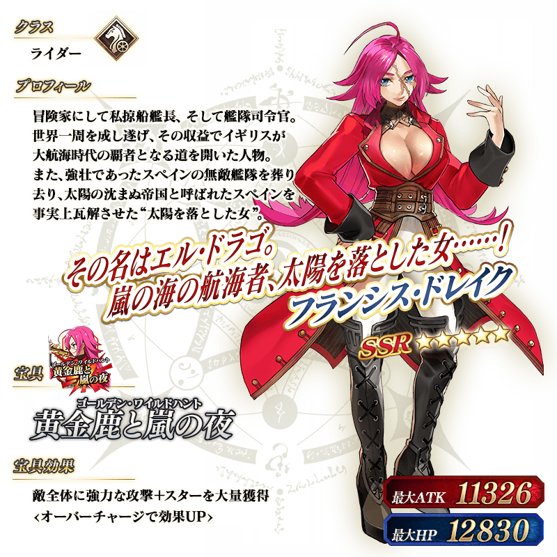


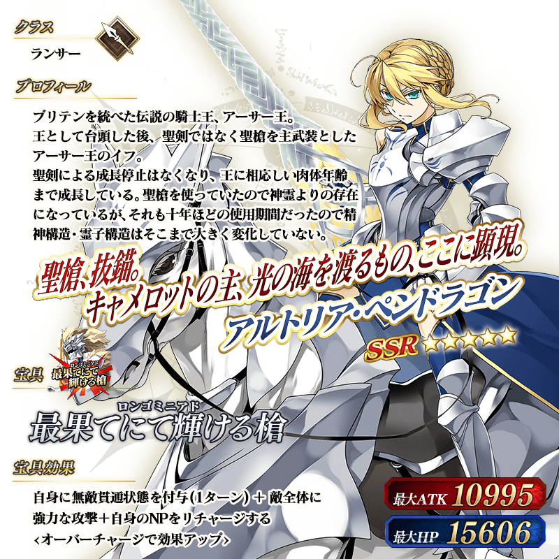

介紹斯卡哈＝斯卡蒂、夏洛克・福爾摩斯的寶具演出！
在「Fate/Grand Order」官方網站內的公告中，公開了「★5(SSR)斯卡哈＝斯卡蒂」「★5(SSR)夏洛克・福爾摩斯」的寶具演出。敬請確認。
介紹阿提拉(Saber)、阿爾托莉亞・潘德拉剛(Saber)、莫德雷德(Saber)、奧茲曼迪亞斯、魁札爾・科亞特爾、女王梅芙、南丁格爾的寶具演出い！
在「Fate/Grand Order」官方網站內的公告中，公開了「★5(SSR)阿提拉(Saber)」「★5(SSR)阿爾托莉亞・潘德拉剛(Saber)」「★5(SSR)莫德雷德(Saber)」「★5(SSR)奧茲曼迪亞斯」「★5(SSR)魁札爾・科亞特爾」「★5(SSR)女王梅芙」「★5(SSR)南丁格爾」的寶具演出。敬請確認。
介紹尼古拉・特斯拉、阿爾托莉亞・潘德拉剛(Lancer)、恩奇杜、弗朗西斯・德雷克、庫・夫林〔Alter〕、貞德(Ruler)的寶具演出！
在「Fate/Grand Order」官方網站內的公告中，公開了「★5(SSR)尼古拉・特斯拉」「★5(SSR)阿爾托莉亞・潘德拉剛(Lancer)」「★5(SSR)恩奇杜」「★5(SSR)弗朗西斯・德雷克」「★5(SSR)庫・夫林〔Alter〕」「★5(SSR)貞德(Ruler)」的寶具演出。敬請確認。
其他還有，期間限定宣傳活動「Fate/Grand Order Fes. 2018 ～3rd Anniversary～」和期間限定「Fate/Grand Order Fes. 2018 ～3rd Anniversary～福袋召喚」舉辦中！
關於詳情請自下述橫幅確認。